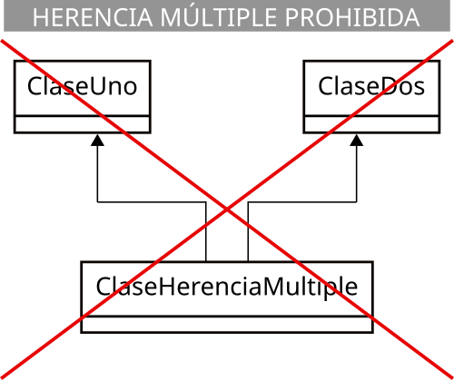

5.3 Herencia
Como ya has estudiado, la herencia es el mecanismo que permite definir una nueva clase a partir de otra, pudiendo añadir nuevas características, sin tener que volver a escribir todo el código de la clase base.
La clase de la que se hereda suele ser llamada clase base, clase madre o superclase (de la que hereda otra clase, y se heredarán todas aquellas características que la clase madre permita). A la clase que hereda se le suele llamar clase hija, clase derivada o subclase (que hereda de otra clase, y se heredan todas aquellas características que la clase madre permita).
Una clase derivada puede ser a su vez clase madre de otra que herede de ella y así sucesivamente dando lugar a una jerarquía de clases, excepto aquellas que estén en la parte de arriba de la jerarquía (sólo serán clases madre) o en la parte de abajo (sólo serán clases hijas).
Una clase hija no tiene acceso a los miembros privados de su clase madre, tan solo a los públicos (como cualquier parte del código tendría) y a los protegidos (a los que sólo tienen acceso las clases derivadas y las del mismo paquete). Aquellos miembros que sean privados en la clase base también habrán sido heredados, pero el acceso a ellos estará restringido al propio funcionamiento de la superclase y sólo se podrá acceder a ellos si la superclase ha dejado algún medio indirecto para hacerlo (por ejemplo a través de algún método).
Todos los miembros de la superclase, tanto atributos como métodos, son heredados por la subclase. Algunos de estos miembros heredados podrán ser redefinidos o sobrescritos (overriden) y también podrán añadirse nuevos miembros. De alguna manera podría decirse que estás "ampliando" la clase base con características adicionales o modificando algunas de ellas (proceso de especialización).
A tener en cuenta
Una clase derivada extiende la funcionalidad de la clase base sin tener que volver a escribir el código de la clase base.
1. Sintaxis de la herencia
En Java la herencia se indica mediante la palabra reservada extends:
[modificador] class ClaseMadre {
// Cuerpo de la clase
...
}
[modificador] class ClaseHija extends ClaseMadre {
// Cuerpo de la clase
...
}Imagina que tienes una clase Persona que contiene atributos como nombre, apellidos y fecha de nacimiento:
public class Persona {
String nombre;
String apellidos;
LocalDate fechaNacim;
// ...
}Es posible que, más adelante, necesites una clase Alumno que compartirá esos atributos (dado que todo alumno es una persona, pero con algunas características específicas que lo especializan). En tal caso tendrías la posibilidad de crear una clase Alumno que repitiera todos esos atributos o bien heredar de la clase Persona:
public class Alumno extends Persona {
String grupo;
double notaMedia;
...
}A partir de ahora, un objeto de la clase Alumno contendrá los atributos grupo y notaMedia (propios de la clase Alumno), pero también nombre, apellidos y fechaNacim (propios de su clase base Persona y que por tanto ha heredado).
Ejemplo 3.01: Revisa con cuidado el siguiente ejemplo
Imagina que también necesitas una clase Profesor, que contará con atributos como nombre, apellidos, fecha de nacimiento, especialidad y salario. ¿Cómo crearías esa nueva clase y qué atributos le añadirías?
Solución
Está claro que un Profesor es otra especialización de Persona, al igual que lo era Alumno, así que podrías crear otra clase derivada de Persona y así aprovechar los atributos genéricos (nombre, apellidos, fecha de nacimiento) que posee todo objeto de tipo Persona. Tan solo faltaría añadirle sus atributos específicos (especialidad y salario):
public class Profesor extends Persona {
String especialidad;
double salario;
...
}2. Acceso a miembros heredados
Como ya has visto anteriormente, no es posible acceder a miembros privados de una superclase. Para poder acceder a ellos podrías pensar en hacerlos públicos, pero entonces estarías dando la opción de acceder a ellos a cualquier objeto externo y es probable que tampoco sea eso lo deseable. Para ello se inventó el modificador protected (protegido) que permite el acceso desde clases heredadas, pero no desde fuera de las clases (estrictamente hablando, desde fuera del paquete), que serían como miembros privados.
En la unidad dedicada a la utilización de clases ya estudiaste los posibles modificadores de acceso que podía tener un miembro: sin modificador (acceso de paquete), público, privado o protegido.
Aquí tienes de nuevo el resumen:
| modificador | Misma clase | Mismo paquete | Subclase | Otro paquete |
|---|---|---|---|---|
public |
✔ | ✔ | ✔ | ✔ |
protected |
✔ | ✔ | ✔ | ❌ |
Sin modificador (package) |
✔ | ✔ | ❌ | ❌ |
private |
✔ | ❌ | ❌ | ❌ |
Los modificadores de acceso son excluyentes
Sólo se puede utilizar uno de ellos en la declaración de un atributo.
Si en el ejemplo anterior de la clase Persona se hubieran definido sus atributos como private:
public class Persona {
private String nombre;
private String apellidos;
...
}Al definir la clase Alumno como heredera de Persona, no habrías tenido acceso a esos atributos, pudiendo ocasionar un grave problema de operatividad al intentar manipular esa información. Por tanto, en estos casos lo más recomendable habría sido declarar esos atributos como protected o bien sin modificador (para que también tengan acceso a ellos otras clases del mismo paquete, si es que se considera oportuno):
public class Persona {
protected String nombre;
protected String apellidos;
...
}Privacidad de atributos
Sólo en aquellos casos en los que se desea explícitamente que un miembro de una clase no pueda ser accesible desde una clase derivada debería utilizarse el modificador private. En el resto de casos es recomendable utilizar protected, o bien no indicar modificador (acceso a nivel de paquete).
Ejemplo 3.02: Revisa con cuidado el siguiente ejemplo
Reescribe las clases Alumno y Profesor utilizando el modificador protected para sus atributos del mismo modo que se ha hecho para su superclase Persona.
Solución
1) Clase Alumno. Se trata simplemente de añadir el modificador de acceso protected a los nuevos atributos que añade la clase:
public class Alumno extends Persona {
protected String grupo;
protected double notaMedia;
...
}2) Clase Profesor (exactamente igual que en la clase Alumno):
public class Profesor extends Persona {
protected String especialidad;
protected double salario;
...
}3. Utilización de miembros heredados
3.1. Atributos
Los atributos heredados por una clase son, a efectos prácticos, iguales que aquellos que sean definidos específicamente en la nueva clase derivada.
En el ejemplo anterior la clase Persona disponía de tres atributos y la clase Alumno, que heredaba de ella, añadía dos atributos más. Desde un punto de vista funcional podrías considerar que la clase Alumno tiene cinco atributos: tres por ser Persona (nombre, apellidos, fecha de nacimiento) y otros dos más por ser Alumno (grupo y nota media).
Ejemplo 3.03: Revisa con cuidado el siguiente ejemplo
Dadas las clases Alumno y Profesor que has utilizado anteriormente, implementa métodos get y set en las clases Alumno y Profesor para trabajar con sus cinco atributos (tres heredados más dos específicos).
Solución
1) Clase Alumno.
Se trata de heredar de la clase Persona y por tanto utilizar con normalidad sus atributos heredados como si pertenecieran a la propia clase (de hecho se puede considerar que le pertenecen, dado que los ha heredado).
import java.time.LocalDate;
public class Alumno extends Persona {
protected String grupo;
protected double notaMedia;
// Método getXXXXX
public String getNombre() {
return nombre;
}
public String getApellidos() {
return apellidos;
}
public LocalDate getFechaNacimiento() {
return this.fechaNacimiento;
}
public String getGrupo() {
return grupo;
}
public double getNotaMedia() {
return notaMedia;
}
// Métodos setXXXXX
public void setNombre(String nombre) {
this.nombre = nombre;
}
public void setApellidos(String apellidos) {
this.apellidos = apellidos;
}
public void setFechaNacimiento(LocalDate fechaNacimiento) {
this.fechaNacimiento = fechaNacimiento;
}
public void setGrupo(String grupo) {
this.grupo = grupo;
}
public void setNotaMedia(double notaMedia) {
this.notaMedia = notaMedia;
}
}Si te fijas, puedes utilizar sin problema la referencia this a la propia clase con esos atributos heredados, pues pertenecen a la clase: this.nombre, this.apellidos, etc.
2) Clase Profesor.
Seguimos exactamente el mismo procedimiento que con la clase Alumno.
import java.time.LocalDate;
public class Profesor extends Persona {
String especialidad;
double salario;
// Métodos getXXXXX
public String getNombre() {
return nombre;
}
public String getApellidos() {
return apellidos;
}
public LocalDate getFechaNacimiento() {
return this.fechaNacimiento;
}
public String getEspecialidad() {
return especialidad;
}
public double getSalario() {
return salario;
}
// Métodos setXXXXX
public void setNombre(String nombre) {
this.nombre = nombre;
}
public void setApellidos(String apellidos) {
this.apellidos = apellidos;
}
public void setFechaNacimiento(LocalDate fechaNacimiento) {
this.fechaNacimiento = fechaNacimiento;
}
public void setSalario(double salario) {
this.salario = salario;
}
public void setESpecialidad(String especialidad) {
this.especialidad = especialidad;
}
}Una conclusión que puedes extraer de este código es que has tenido que escribir los métodos get y set para los tres atributos heredados, pero ¿no habría sido posible definir esos seis métodos en la clase base y así estas dos clases derivadas hubieran también heredado esos métodos? La respuesta es afirmativa y de hecho es como lo vas a hacer a partir de ahora. De esa manera te habrías evitado tener que escribir seis métodos en la clase Alumno y otros seis en la clase Profesor.
Así que, recuerda!
Se pueden heredar tanto los atributos como los métodos.
Aquí tienes un ejemplo de cómo podrías haber definido la clase Persona para que luego se hubieran podido heredar de ella sus métodos (y no sólo sus atributos):
Solución implementada correctamente (I)
import java.time.LocalDate;
public class Persona {
protected String nombre;
protected String apellidos;
protected LocalDate fechaNacimiento;
// Métodos getXXXXX
public String getNombre() {
return nombre;
}
public String getApellidos() {
return apellidos;
}
public LocalDate getFechaNacimiento() {
return this.fechaNacimiento;
}
// Métodos setXXXXX
public void setNombre(String nombre) {
this.nombre = nombre;
}
public void setApellidos(String apellidos) {
this.apellidos = apellidos;
}
public void setFechaNacimiento(LocalDate fechaNacimiento) {
this.fechaNacimiento = fechaNacimiento;
}
}3.2. Métodos
Así que, visto el ejemplo del punto anterior, del mismo modo que se heredan los atributos, también se heredan los métodos, convirtiéndose a partir de ese momento en otros métodos más de la clase derivada, junto a los que hayan sido definidos específicamente.
En el ejemplo de la clase Persona, si dispusiéramos de métodos get y set para cada uno de sus tres atributos (nombre, apellidos, fechaNacim), tendrías seis métodos que podrían ser heredados por sus clases derivadas. Podrías decir entonces que la clase Alumno, derivada de Persona, tiene diez métodos:
- Seis por ser Persona (
getNombre,getApellidos,getFechaNacim,setNombre,setApellidos,setFechaNacim). - Oros cuatro más por ser Alumno (
getGrupo,setGrupo,getNotaMedia,setNotaMedia).
Sin embargo, solo tendrías que definir esos cuatro últimos (los específicos) pues los genéricos ya los has heredado de la superclase.
Ejemplo 3.04: Revisa con cuidado el siguiente ejemplo
public class Profesor extends Persona {
String especialidad;
double salario;
// Métodos getXXXXX
public String getEspecialidad() {
return especialidad;
}
public double getSalario() {
return salario;
}
// Métodos setXXXXX
public void setSalario(double salario) {
this.salario = salario;
}
public void setESpecialidad(String especialidad) {
this.especialidad = especialidad;
}
} 4. Redefinición de métodos heredados
Una clase puede redefinir algunos de los métodos que ha heredado de su clase base. El nuevo método (especializado) sustituye al heredado. Esto se conoce como sobrescritura de métodos.
En cualquier caso, aunque un método sea sobrescrito o redefinido, aún es posible acceder a él a través de la referencia super, aunque sólo se podrá acceder a métodos de la clase madre y no a métodos de clases superiores en la jerarquía de herencia.
Accesibilidad de los métodos redefinidos
Los métodos redefinidos pueden ampliar su accesibilidad con respecto a la que ofrezca el método original de la superclase, pero nunca restringirla. Por ejemplo, si un método es declarado como protected o de paquete en la clase base, podría ser redefinido como public en una clase derivada.
Métodos estáticos
Los métodos estáticos o de clase no pueden ser sobrescritos. Los originales de la clase base permanecen inalterables a través de toda la jerarquía de herencia.
Ejemplo 3.05: método obtener atributo apellidos de Alumno
En el ejemplo de la clase Alumno, podrían redefinirse algunos de los métodos heredados. Por ejemplo, imagina que el método getApellidos devuelva la cadena "Alumno: " junto con los apellidos del alumno. En tal caso habría que reescribir ese método para realizara esa modificación:
public String getApellidos () {
return "Alumno: " + apellidos;
}Cuando sobrescribas un método heredado en Java puedes (no es necesario) incluir la anotación @Override. Esto indicará al compilador que tu intención es sobrescribir el método de la clase madre. De este modo, si te equivocas (por ejemplo, al escribir el nombre del método) y no lo estás realmente sobrescribiendo, el compilador producirá un error y así podrás darte cuenta del fallo. En el caso del ejemplo anterior quedaría:
Ejemplo 3.06: método obtener atributo apellidos de Alumno sobreescrito
@Override
public String getApellidos () {
return "Alumno: " + apellidos;
}Ejemplo 3.07: Revisa con cuidado el siguiente ejemplo
Dadas las clases Persona, Alumno y Profesor que has utilizado anteriormente, redefine el método getNombre para que devuelva la cadena "Alumno: ", junto con el nombre del alumno, si se trata de un objeto de la clase Alumno o bien "Profesor: ", junto con el nombre del profesor, si se trata de un objeto de la clase Profesor.
Solución
1) Clase Alumno.
Al heredar de la clase Persona tan solo es necesario escribir métodos para los nuevos atributos (métodos especializados de acceso a los atributos especializados), pues los métodos genéricos (de acceso a los atributos genéricos) ya forman parte de la clase al haberlos heredado. Esos son los métodos que se implementaron en el ejercicio anterior (getGrupo, setGrupo, etc.).
Ahora bien, hay que escribir otro método más, pues tienes que redefinir el método getNombre para que tenga un comportamiento un poco diferente al getNombre que se hereda de la clase base Persona:
// Método getNombre
@Override
public String getNombre (){
return "Alumno: " + this.nombre;
}En este caso podría decirse que se "renuncia" al método heredado para redefinirlo con un comportamiento más especializado y acorde con la clase derivada.
2) Clase Profesor.
Seguimos exactamente el mismo procedimiento que con la clase Alumno (redefinición del método getNombre).
// Método getNombre
@Override
public String getNombre() {
return "Profesor: " + this.nombre;
}5. Ampliación de métodos heredados
Hasta ahora, has visto que para redefinir o sustituir un método de una superclase es suficiente con crear otro método en la subclase que tenga el mismo nombre que el método que se desea sobrescribir. Pero, en otras ocasiones, puede que lo que necesites no sea sustituir completamente el comportamiento del método de la superclase, sino simplemente ampliarlo.
Para poder hacer esto necesitas poder preservar el comportamiento antiguo (el de la superclase) y añadir el nuevo (el de la subclase). Para ello, puedes invocar desde el método "ampliador" de la clase derivada al método "ampliado" de la clase superior (teniendo ambos métodos el mismo nombre). ¿Cómo se puede conseguir eso? Puedes hacerlo mediante el uso de la referencia super.
La palabra reservada super es una referencia a la clase madre de la clase en la que te encuentres en cada momento (es algo similar a this, que representaba una referencia a la clase actual). De esta manera, podrías invocar a cualquier método de tu superclase (si es que se tiene acceso a él).
Ejemplo 3.08: método mostrarDatos de Alumno
Imagina que la clase Persona dispone de un método que permite mostrar el contenido de algunos datos personales de los objetos de este tipo (nombre, apellidos, etc.).
Por otro lado, la clase Alumno también necesita un método similar, pero que muestre también su información especializada (grupo, nota media, etc.). ¿Cómo podrías aprovechar el método de la superclase para no tener que volver a escribir su contenido en la subclase?
Solución
Podría hacerse de una manera tan sencilla como la siguiente:
public void mostrarDatos () {
super.mostrarDatos(); // Llamada al método "mostrar" de la superclase
// A continuación mostramos la información "especializada" de esta subclase
System.out.prinln ("Grupo:" + this.grupo);
System.out.prinln ("Nota media: " + this.notaMedia);
}Este tipo de ampliaciones de métodos resultan especialmente útiles por ejemplo en el caso de los constructores, donde se podría ir llamando a los constructores de cada superclase encadenadamente hasta el constructor de la clase en la cúspide de la jerarquía (el constructor de la clase Object).
Ejemplo 3.09: Revisa con cuidado el siguiente ejemplo
Dadas las clases Persona, Alumno y Profesor, define un método mostrarDatos() para la clase Persona, que muestre el contenido de los atributos (datos personales) de un objeto de la clase Persona. A continuación, define sendos métodos mostrarDatos() especializados para las clases Alumno y Profesor que "amplíen" la funcionalidad del método mostrar original de la clase Persona.
Solución
1) Método mostrarDatos() de la clase Persona.
public void mostrarDatos() {
DateTimeFormatter formatoFecha = DateTimeFormatter.ofPattern("dd/MM/yyyy");
String stringFecha = formatoFecha.format(this.fechaNacimiento);
System.out.println ("Nombre:" + this.nombre);
System.out.println ("Apellidos:" + this.apellidos);
System.out.printfln ("Fecha nacimiento:" + stringFecha);
}2) Método mostrarDatos() de la clase Alumno. Llamamos al método mostrar de su clase madre (Persona) y luego añadimos la funcionalidad específica para la subclase Alumno:
public void mostrarDatos() {
super.mostrarDatos(); // Llamada al método "mostrarDatos" de la superclase
// A continuación mostramos la información "especializada" de esta subclase
System.out.println ("Grupo:" + this.grupo);
System.out.println ("Nota media:" + this.notaMedia);
}3) Método mostrarDatos() de la clase Profesor. Llamamos al método mostrar de su clase madre (Persona) y luego añadimos la funcionalidad específica para la subclase Profesor:
public void mostrarDatos() {
super.mostrarDatos();
System.out.println ("Especialidad:" + this.especialidad);
System.out.println ("Salario:" + this.salario);
}6. Constructores y herencia
Recuerda que cuando estudiaste los constructores viste que un constructor de una clase puede llamar a otro constructor de la misma clase, previamente definido, a través de la referencia this. En estos casos, la utilización de this sólo podía hacerse en la primera línea de código del constructor.
Como ya has visto, un constructor de una clase derivada puede hacer algo parecido para llamar al constructor de su clase base mediante el uso de la palabra super. De esta manera, el constructor de una clase derivada puede llamar primero al constructor de su superclase para que inicialice los atributos heredados y posteriormente se inicializarán los atributos específicos de la clase: los no heredados.
A tener en cuenta al utilizar super en un constructor
Nuevamente, esta llamada también debe ser la primera sentencia de un constructor (con la única excepción de que exista una llamada a otro constructor de la clase mediante this).
Si no se incluye una llamada a super() dentro del constructor, el compilador incluye automáticamente una llamada al constructor por defecto de clase base (llamada a super()). Esto da lugar a una llamada en cadena de constructores de superclase hasta llegar a la clase más alta de la jerarquía (que en Java es la clase Object).
En el caso del constructor por defecto (el que crea el compilador si el programador no ha escrito ninguno), el compilador añade lo primero de todo, antes de la inicialización de los atributos a sus valores por defecto, una llamada al constructor de la clase base mediante la referencia super.
A la hora de destruir un objeto (método finalize) es importante llamar a los finalizadores en el orden inverso a como fueron llamados los constructores (primero se liberan los recursos de la clase derivada y después los de la clase base mediante la llamada super.finalize()).
Ejemplo 3.10: Constructor de Alumno que hereda parte del constructor de Persona
Si la clase Persona tuviera un constructor de este tipo:
public Persona (String nombre, String apellidos, LocalDate fechaNacim) {
this.nombe = nombre;
this.apellidos = apellidos;
this.fechaNacim = new LocalDate (fechaNacim);
}Podrías llamarlo desde un constructor de una clase derivada (por ejemplo Alumno) de la siguiente forma:
public Alumno (String nombre, String apellidos, LocalDate fechaNacim, String grupo, double notaMedia) {
super (nombre, apellidos, fechaNacim);
this.grupo = grupo;
this.notaMedia = notaMedia;
}En realidad se trata de otro recurso más para optimizar la reutilización de código, en este caso el del constructor, que aunque no es heredado, sí puedes invocarlo para no tener que reescribirlo.
7. La clase Object en Java
Todas las clases en Java son descendentes (directos o indirectos) de la clase Object. Esta clase define los estados y comportamientos básicos que deben tener todos los objetos. Entre estos comportamientos, se encuentran:
- La posibilidad de compararse.
- La capacidad de convertirse a cadenas.
- La habilidad de devolver la clase del objeto.
Entre los métodos que incorpora la clase Object y que por tanto hereda cualquier clase en Java tienes:
Principales métodos de la clase Object:
| Método | Descripción |
|---|---|
Object() |
Constructor. |
clone() |
Método clonador: crea y devuelve una copia del objeto ("clona" el objeto). |
boolean equals(Object obj) |
Indica si el objeto pasado como parámetro es igual a este objeto. |
void finalize() |
Método llamado por el recolector de basura cuando éste considera que no queda ninguna referencia a este objeto en el entorno de ejecución. |
int hashCode() |
Devuelve un código hash para el objeto. |
toString() |
Devuelve una representación del objeto en forma de String. |
La clase Object representa la superclase que se encuentra en la cúspide de la jerarquía de herencia en Java. Cualquier clase (incluso las que tú implementes) acaban heredando de ella.
8. Herencia múltiple
En determinados casos podrías considerar la posibilidad de que se necesite heredar de más de una clase, para así disponer de los miembros de dos (o más) clases disjuntas (que no derivan una de la otra). La herencia múltiple permite hacer eso: recoger las distintas características (atributos y métodos) de clases diferentes formando una nueva clase derivada de varias clases base.
El problema en estos casos es la posibilidad que existe de que se produzcan ambigüedades; así, si tuviéramos miembros con el mismo identificador en clases base diferentes, en tal caso, ¿qué miembro se hereda? Para evitar esto, los compiladores suelen solicitar que ante casos de ambigüedad, se especifique de manera explícita la clase de la cual se quiere utilizar un determinado miembro que pueda ser ambiguo.
Ahora bien, la posibilidad de herencia múltiple no está disponible en todos los lenguajes orientados a objetos.
...¿lo estará en Java?
... no existe la herencia múltiple de clases.
